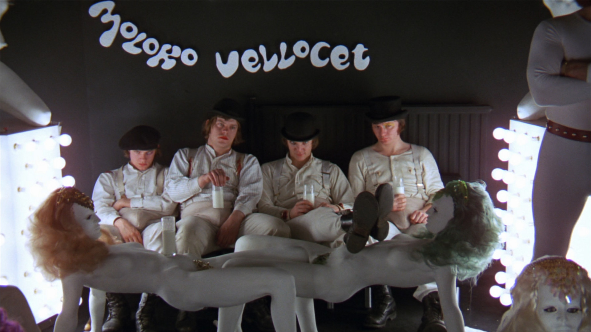
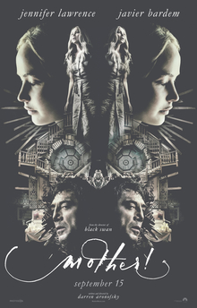
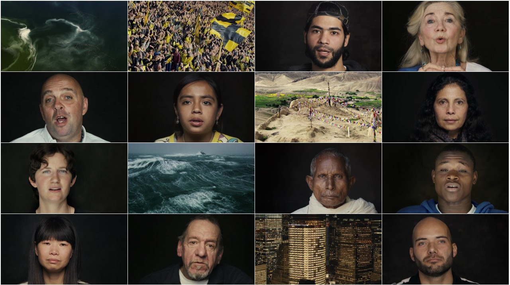

Un film ce clar nu apartine vremurilor sale (1971)!
Sa ne amintim cate furori a starnit la vremea lui, chiar pe aproape sa fie interzis din cauza violentei.
Astazi este vazut ca o opera de referinta in cinematografie si este apreciat pentru inventivitate si "tupeul" de a iesi din tiparele vremii. Actiunea are loc in Marea Britanie, intr-un timp viitor - o era haotica si violenta.
Da-i o sansa acestui film, ce zici?

“Mother!” este ultimul film din seria controversata a regizorului american Darren Aronofsky, cunoscut pentru lungmetrajele sale socante, care starnesc mereu reactii extrem de mixte.
Mother este un film bazat pe contestarea unor arhetipuri, credinte si modele, intr-un mod atat de direct si agresiv, caracteristici din stilul Aronofsky, incat ai fi tentat sa te ridici si sa iesi din sala de cinema dupa anumite secvente. Un lungmetraj intesat cu referinte biblice si intrebari existentiale, “Mother!” e caracterizat de un crescendo atat de intens in desfasurarea actiunii, incat ti-e imposibil sa ramai doar un privitor impasibil, detasat de secventele filmului.
Un film controversat care cu siguranta iti va pune la indoiala anumite idei despre umanitate si un candidat serios la filmul anului 2017.

Nu este tocmai un film, este un documentar - unul cu un impact destul de mare as zice.
Un proiect deosebit cu interviuri scurte date de oameni de pe tot cuprinsul Globului, asta ar fi "Human" judecat la rece. El de fapt iti asterne fel si fel de povesti cu o incarcatura emotionala deosebita. 190 de minute de intelepciune servita tie, spectatorului.
La final vei realiza niste lucruri pe deopotriva simple, dar importante. Ce am invatat de aici este ca trebuie sa fiu recunoscatoare pentru ceea ce am, ca am fost printre acei oameni ce au avut norocul sa se nasca intr-o zona ferita de conflicte si calamitati. Pare o remarca destul de naiva, asa-i? Ei bine nu e chiar asa. Urmareste acest documentar si fii pregatit pentru ce urmeaza sa vezi. Te va emotiona profund. Te asigur. O doza de intelepciune, cum am zis mai sus, ce ar trebui oferita tuturor.
Fiti pe faza, caci va urma
The Perks of Being a Wallflower - 2012